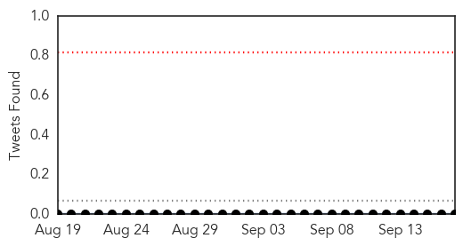
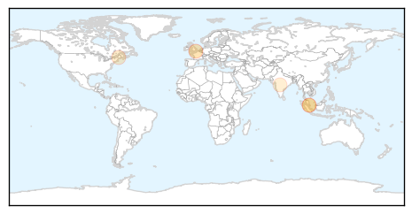
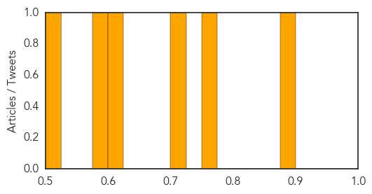
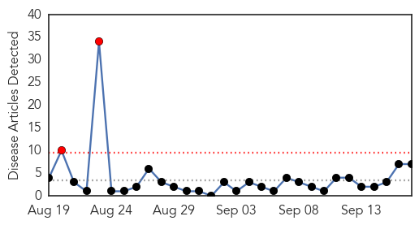
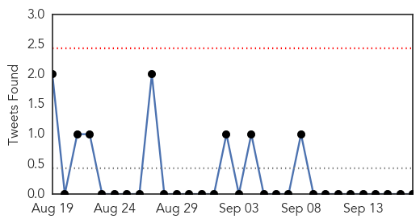
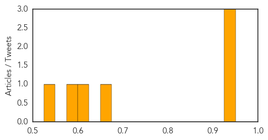

Meningitis
30-Day Web Trend
0 alerts, 0 warnings

30-Day Twitter Trend
0 alerts, 0 warnings

Article Locations
Article Confidences
Top Articles:
- 0.878
- Uckfield meningitis campaigner urges community to get vaccinated
- 0.767
- Three Hawke's Bay tots contract Meningococcal disease
- 0.720
- Strain of bacteria linked to infections from raw fish found
- 0.615
- Officials confirm two unrelated meningitis cases in MSAD 60
- 0.596
- Scientists discovers strain of GBS bacteria linked to raw fish, news, Health News, AsiaOne YourHealth
- 0.524
- New consignment of TB vaccine to arrive in SA
Top Tweets:
-
No tweets found for Sep 17, 2015
Cholera
30-Day Web Trend
2 alerts, 0 warnings

30-Day Twitter Trend
0 alerts, 0 warnings

Article Locations

Article Confidences
Top Articles:
- 0.941
- Nigeria: People fleeing Boko Haram violence hit by cholera
- 0.939
- MSF appeals for help as cholera spreads in displaced-persons camps in north-eastern Nigeria
- 0.938
- Nigeria: People fleeing Boko Haram violence hit by cholera, MSF appeals for international support in emergency-struck Borno state - Nigeria
- 0.657
- Delhi superbug now in over 70 nations
- 0.624
- New Delhi superbug spreads to 70 countries across the world
- 0.599
- Cholera kills 16 in north Nigeria, medical charity MSF calls for help
- 0.532
- Dady Chery and Eric Draitser Discuss Imperialism and Colonialism in Haiti
Top Tweets:
-
No tweets found for Sep 17, 2015